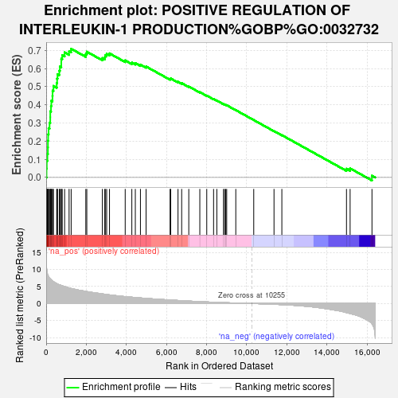
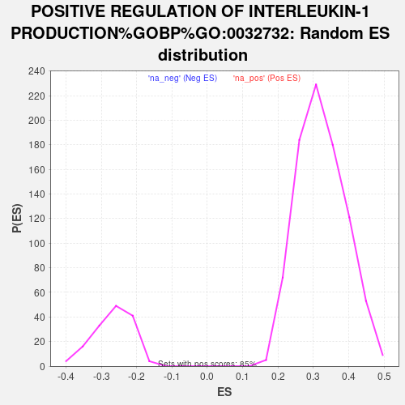

| | | Dataset | CD_deg |
| Phenotype | NoPhenotypeAvailable |
| Upregulated in class | na_pos |
| GeneSet | POSITIVE REGULATION OF INTERLEUKIN-1 PRODUCTION%GOBP%GO:0032732 |
| Enrichment Score (ES) | 0.7089371 |
| Normalized Enrichment Score (NES) | 2.1992075 |
| Nominal p-value | 0.0 |
| FDR q-value | 0.0 |
| FWER p-Value | 0.0 |
Table: GSEA Results Summary

Fig 1: Enrichment plot: POSITIVE REGULATION OF INTERLEUKIN-1 PRODUCTION%GOBP%GO:0032732
Profile of the Running ES Score & Positions of GeneSet Members on the Rank Ordered List
| SYMBOL | RANK IN GENE LIST | RANK METRIC SCORE | RUNNING ES | CORE ENRICHMENT | | 1 | LILRA5 | 18 | 11.273 | 0.0492 | Yes |
| 2 | LPL | 31 | 9.875 | 0.0925 | Yes |
| 3 | MEFV | 63 | 8.721 | 0.1294 | Yes |
| 4 | IFNG | 86 | 8.290 | 0.1651 | Yes |
| 5 | LGALS9 | 89 | 8.264 | 0.2018 | Yes |
| 6 | GBP5 | 99 | 8.123 | 0.2375 | Yes |
| 7 | LILRA2 | 121 | 7.852 | 0.2712 | Yes |
| 8 | TRIM16 | 169 | 7.471 | 0.3016 | Yes |
| 9 | RIPK2 | 204 | 7.228 | 0.3318 | Yes |
| 10 | WNT5A | 205 | 7.222 | 0.3640 | Yes |
| 11 | CCL3 | 241 | 6.995 | 0.3930 | Yes |
| 12 | TMED10 | 258 | 6.913 | 0.4229 | Yes |
| 13 | TLR8 | 315 | 6.621 | 0.4489 | Yes |
| 14 | NLRC4 | 320 | 6.592 | 0.4781 | Yes |
| 15 | SAA1 | 363 | 6.398 | 0.5041 | Yes |
| 16 | TYROBP | 526 | 5.856 | 0.5203 | Yes |
| 17 | TLR4 | 546 | 5.753 | 0.5447 | Yes |
| 18 | NOD2 | 566 | 5.699 | 0.5690 | Yes |
| 19 | CLEC7A | 655 | 5.494 | 0.5881 | Yes |
| 20 | JAK2 | 683 | 5.435 | 0.6107 | Yes |
| 21 | IL6 | 753 | 5.297 | 0.6301 | Yes |
| 22 | STAT3 | 754 | 5.292 | 0.6537 | Yes |
| 23 | APP | 801 | 5.187 | 0.6740 | Yes |
| 24 | CASP1 | 920 | 4.946 | 0.6888 | Yes |
| 25 | MYD88 | 1143 | 4.568 | 0.6956 | Yes |
| 26 | NLRP12 | 1246 | 4.388 | 0.7089 | Yes |
| 27 | NLRP3 | 1977 | 3.546 | 0.6801 | No |
| 28 | RELA | 2026 | 3.492 | 0.6927 | No |
| 29 | TMEM106A | 2802 | 2.820 | 0.6579 | No |
| 30 | PANX1 | 2923 | 2.715 | 0.6627 | No |
| 31 | HMGB1 | 2946 | 2.695 | 0.6733 | No |
| 32 | IFI16 | 3016 | 2.633 | 0.6809 | No |
| 33 | EGR1 | 3158 | 2.528 | 0.6835 | No |
| 34 | P2RX7 | 3941 | 2.019 | 0.6447 | No |
| 35 | CASP8 | 4272 | 1.843 | 0.6327 | No |
| 36 | PYCARD | 4446 | 1.760 | 0.6300 | No |
| 37 | NLRP2 | 4701 | 1.628 | 0.6217 | No |
| 38 | TNF | 4983 | 1.498 | 0.6112 | No |
| 39 | NAIP | 6179 | 1.025 | 0.5427 | No |
| 40 | HSPB1 | 6210 | 1.012 | 0.5454 | No |
| 41 | IL17A | 6575 | 0.886 | 0.5270 | No |
| 42 | GSDMD | 6757 | 0.826 | 0.5197 | No |
| 43 | AIM2 | 7112 | 0.704 | 0.5011 | No |
| 44 | IL16 | 7662 | 0.545 | 0.4700 | No |
| 45 | MALT1 | 8008 | 0.454 | 0.4509 | No |
| 46 | CARD8 | 8348 | 0.367 | 0.4318 | No |
| 47 | TLR6 | 8511 | 0.332 | 0.4234 | No |
| 48 | ISL1 | 8843 | 0.263 | 0.4043 | No |
| 49 | AGER | 8898 | 0.249 | 0.4021 | No |
| 50 | NLRP1 | 8952 | 0.236 | 0.3999 | No |
| 51 | CCL19 | 9003 | 0.223 | 0.3979 | No |
| 52 | S100A13 | 9456 | 0.134 | 0.3708 | No |
| 53 | STMP1 | 10351 | -0.016 | 0.3162 | No |
| 54 | F2RL1 | 11362 | -0.225 | 0.2554 | No |
| 55 | USP50 | 11753 | -0.332 | 0.2331 | No |
| 56 | FZD5 | 14976 | -2.665 | 0.0479 | No |
| 57 | INAVA | 15157 | -2.918 | 0.0499 | No |
| 58 | CD36 | 16247 | -5.943 | 0.0098 | No |
Table: GSEA details [plain text format]

Fig 2: POSITIVE REGULATION OF INTERLEUKIN-1 PRODUCTION%GOBP%GO:0032732: Random ES distribution
Gene set null distribution of ES for POSITIVE REGULATION OF INTERLEUKIN-1 PRODUCTION%GOBP%GO:0032732